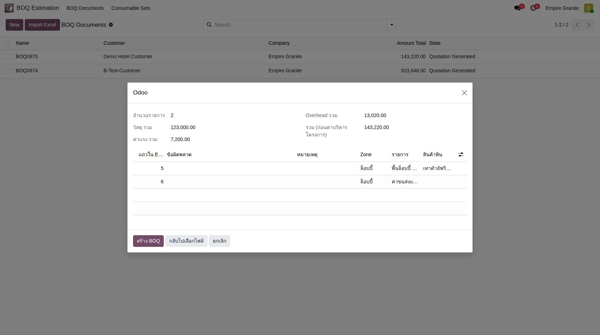
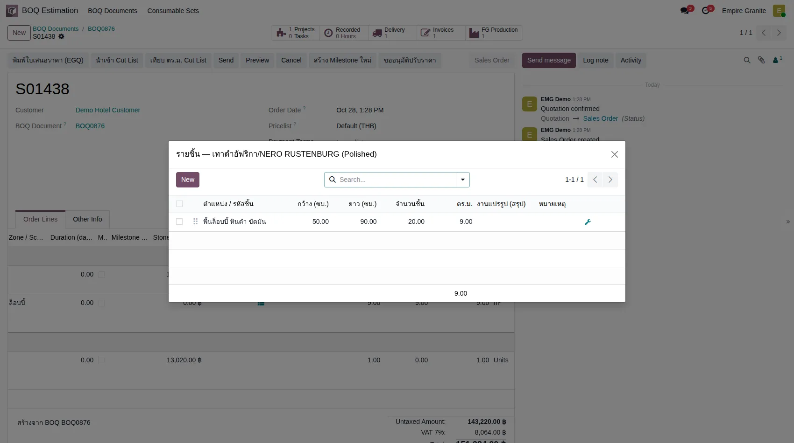
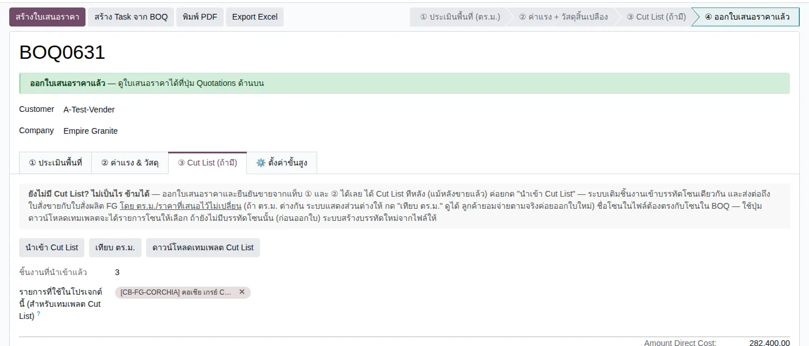
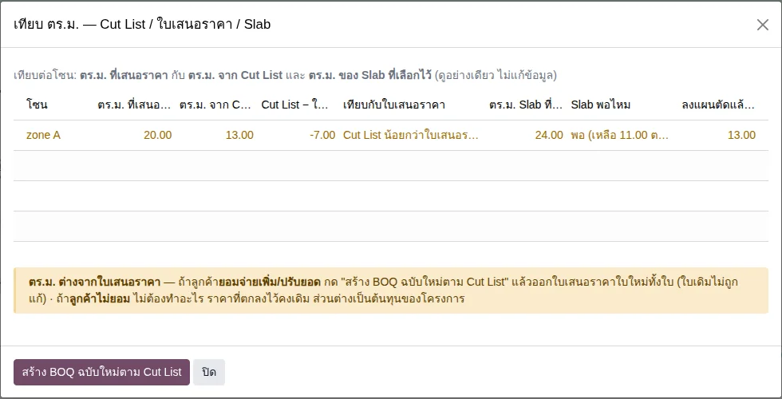
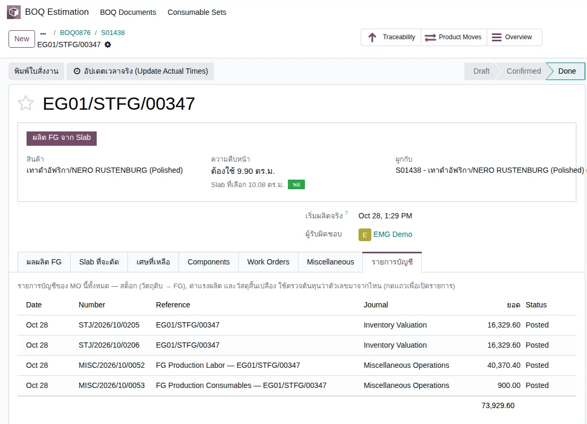

อัปเดตล่าสุด: 28 ตุลาคม 2569 (2026-10-28) · ภาพหน้าจอ BOQ/ใบเสนอราคา/ใบสั่งผลิต/P&L ถ่ายจากระบบทดสอบ eg-tst เมื่อ 28 ตุลาคม 2569 (stone_slab_inventory / boq_estimation รอบ 27 ต.ค.) ภาพ Cut List ถ่ายเมื่อ 25 ตุลาคม 2569
บทนี้อธิบายความต่างระหว่าง BOQ กับ Cut List ว่าแต่ละอย่างคืออะไร อยู่ตรงไหนของงาน และมาต่อกันอย่างไร เพราะทั้งสองอย่างเป็นไฟล์ Excel และมีปุ่มนำเข้าเหมือนกัน จึงสับสนกันง่าย ภาพหน้าจอส่วนของ BOQ (4.1–4.3, 4.6) มาจากการรันจริงบน eg-tst เมื่อ 28 ตุลาคม 2569 ส่วนของ Cut List (4.4–4.5) เป็นภาพจากรอบ 25 ตุลาคม 2569 อ่านคู่กับ บทที่ 22 BOQ Estimation ได้ แต่บทที่ 22 ยังเขียนตามแบบเดิมที่มี Rate Library (ดูหัวข้อ 6)
1. BOQ กับ Cut List คืออะไร
BOQ คือรายการงานที่ฝั่งขายเสนอลูกค้า 1 แถว = 1 งาน เช่น "พื้นล็อบบี้ 9 ตร.ม." มีราคา ค่าแรง และยอดรวม ส่วน Cut List คือรายชิ้นหินตามแบบที่โรงงานต้องตัด 1 แถว = 1 ชิ้น (หรือกลุ่มชิ้นขนาดเท่ากัน) แยกตามโซน
| โซน | รายการ | ขนาดแผ่น | จำนวน |
|---|---|---|---|
| ล็อบบี้ | พื้นล็อบบี้ หินดำ | 50 × 90 × 2 ซม. | 9 ตร.ม. |
| ผนังลิฟต์ | ผนังลิฟต์ชั้น 1 หินดำ | 60 × 120 × 2 ซม. | 14.4 ตร.ม. |
| โซน | ชิ้น | กว้าง × ยาว (ซม.) | จำนวน |
|---|---|---|---|
| ล็อบบี้ | พื้นชิ้นมาตรฐาน | 50 × 90 | 18 |
| ล็อบบี้ | พื้นชิ้นริมผนัง | 50 × 45 | 2 |
| ล็อบบี้ | พื้นชิ้นตัดมุมเสา | 30 × 30 | 4 |
2. แนวคิดหลัก 6 ข้อ
- BOQ ตอบเรื่องราคา Cut List ตอบเรื่องการตัด ฝ่ายขายใช้ BOQ ออกใบเสนอราคา โรงงานใช้ Cut List รู้ว่าต้องตัดชิ้นไหน
- Import Excel สร้าง BOQ ใบใหม่เสมอ ไม่ทับหรือเติมเข้า BOQ เดิม ส่วน นำเข้า Cut List ใส่ข้อมูลเข้า BOQ ที่มีอยู่
- ไม่ต้องรอ Cut List ออกใบเสนอราคา Confirm และผลิตจาก BOQ ได้เลย (หน้าจอแท็บ ③ เขียนไว้ว่า "ยังไม่มี Cut List? ไม่เป็นไร ข้ามได้")
- ขนาดใน BOQ เดินทางต่อไปเอง ขนาดและจำนวนชิ้นจาก BOQ ไปอยู่บนบรรทัดใบเสนอราคาและใบสั่งผลิต FG ไม่ต้องกรอกซ้ำ
- Cut List มาทีหลังได้ แม้ขายแล้ว แต่หลังออกใบเสนอราคา Cut List เติมได้เฉพาะชิ้นงานเข้าบรรทัดเดิม ไม่เปลี่ยน ตร.ม. และราคาที่เสนอไป
- ยอดใน BOQ ไม่ใช่ต้นทุนจริง "Direct Cost" ใน BOQ คือวัสดุ + ค่าแรงที่ตั้งราคาขาย ต้นทุนจริงของโรงงานมาจากใบสั่งผลิตหลังผลิตเสร็จ
3. ภาพรวมขั้นตอน
กล่องสีเหลืองคือสองจุดที่มักสับสน ขั้น 1 เป็นของ BOQ ส่วนขั้น 4 เป็นของ Cut List และขั้น 4 ข้ามได้ถ้ายังไม่มีแบบ
4. ขั้นตอนทีละหน้าจอ
4.1 นำเข้า BOQ จากไฟล์ Excel (Import Excel)
ไปที่ BOQ Estimation → BOQ Documents → Import Excel เลือกลูกค้า (ต้องเลือกก่อน ไม่งั้นปุ่มดาวน์โหลดเทมเพลตไม่ทำงาน) เลือกไฟล์ แล้วกด อ่านไฟล์ ไฟล์ที่ใช้ในการรันมี 2 บรรทัด: พื้นล็อบบี้หินดำ NERO RUSTENBURG (Polished) ขนาด 50 × 90 ซม. หนา 2 ซม. รวม 9 ตร.ม. ค่าแรง 800/ตร.ม. กับค่าขนส่งและติดตั้ง 15,000 บาท (บรรทัดบริการไม่ต้องเลือกสินค้า)

หน้าตัวอย่างแสดง จำนวนรายการ 2 · วัสดุรวม 123,000.00 · ค่าแรงรวม 7,200.00 · Overhead รวม 13,020.00 · รวม 143,220.00 ถ้ามีแถวผิดจะแสดงข้อผิดพลาดตรงแถวนั้นและยังสร้าง BOQ ไม่ได้ กด สร้าง BOQ เมื่อพร้อม
4.2 BOQ ที่ได้
ได้ BOQ ใบใหม่ (ตัวอย่าง BOQ0876) ลูกค้า Demo Hotel Customer 2 บรรทัดโซนล็อบบี้

4.3 ใบเสนอราคา และขนาดที่ติดมาจาก BOQ
กด สร้างใบเสนอราคา ที่ BOQ ได้ใบเสนอราคาที่ยอดก่อน VAT 143,220.00 รวม VAT 151,284.00 บรรทัดพื้นมีไอคอน รายชิ้น กดเปิดดูได้

รายชิ้นมี 1 แถว กว้าง 50.00 ซม. ยาว 90.00 ซม. จำนวน 20 ชิ้น รวม 9.00 ตร.ม. ระบบคำนวณเองจาก 9 ตร.ม. ÷ พื้นที่แผ่นละ 0.45 ตร.ม. ขนาดนี้ต่อไปถึงใบสั่งผลิต FG ด้วย (ผลรันจริง: ใบสั่งผลิตได้ 20 ชิ้น หน้าจอฝั่งโรงงานแสดงเป็นเมตร 0.50 × 0.90 × 0.02)
4.4 นำเข้า Cut List (เมื่อได้แบบ)
เปิด BOQ ที่มีอยู่ แท็บ ③ Cut List (ถ้ามี) มี 3 ปุ่ม: นำเข้า Cut List, เทียบ ตร.ม. และ ดาวน์โหลดเทมเพลต Cut List (ได้รายการโซนให้เลือก)

ข้อความในแท็บบอกว่า ถ้ายังไม่มี Cut List ไม่เป็นไร ข้ามได้ ออกใบเสนอราคาและยืนยันขายได้เลย ได้ Cut List ทีหลังค่อยกด "นำเข้า Cut List" ระบบเติมชิ้นงานเข้าบรรทัดโซนเดียวกัน และส่งต่อถึงใบขายกับใบสั่งผลิต FG โดย ตร.ม./ราคาที่เสนอไว้ไม่เปลี่ยน ชื่อโซนในไฟล์ต้องตรงกับโซนใน BOQ
ลองได้ด้วยไฟล์ตัวอย่างใน Library: BOQ โรงแรม นำเข้าด้วย Import Excel ก่อน แล้วใช้ Cut List โรงแรม (48 ชิ้น 2 โซน ชื่อโซนตรงกัน) ใส่สินค้า NERO RUSTENBURG (Polished) และ SHANDONG BLACK (Polished) ใน "รายการที่ใช้ในโปรเจกต์นี้" ของ BOQ ก่อน ผลที่ได้จริง: เติมชิ้นงานเข้า 2 บรรทัดเดิม ล็อบบี้ Cut List 8.91 ตร.ม. (BOQ เสนอ 9.00) ผนังลิฟต์ 14.04 ตร.ม. (BOQ เสนอ 14.40) ยอดที่เสนอไม่เปลี่ยน
เลือกวิธีนำเข้าได้ 2 แบบ (ตามหน้าจอนำเข้า):
- สร้างบรรทัดใหม่จากชิ้นงาน ใช้ก่อนออกใบเสนอราคา เมื่อ BOQ ยังไม่มีบรรทัดของโซนนั้น
- เติมชิ้นงานเข้าบรรทัดเดิมตามโซน ใช้เมื่อ BOQ มีบรรทัดโซนนั้นอยู่แล้ว มีตัวเลือกติ๊ก "ปรับ ตร.ม. ตาม Cut List" ถ้าไม่ติ๊ก ระบบเก็บ ตร.ม. ที่ประเมินไว้แล้วแค่เติมชิ้นงาน
4.5 เทียบ ตร.ม. — Cut List / ใบเสนอราคา / Slab
กดปุ่ม เทียบ ตร.ม. ระบบเทียบรายโซน: ตร.ม. ที่เสนอ กับ ตร.ม. จาก Cut List และ ตร.ม. ของ Slab ที่เลือกไว้ (ดูอย่างเดียว ไม่แก้ข้อมูล)

ตัวอย่างจากภาพ: zone A เสนอ 20.00 ตร.ม. แต่ Cut List รวมได้ 13.00 ตร.ม. ต่างกัน −7.00 ระบบขึ้น "Cut List น้อยกว่าใบเสนอราคา" และบอกว่า Slab ที่เลือกไว้ 24.00 ตร.ม. พอ (เหลือ 11.00)
4.6 ต้นทุนที่เกิดจาก BOQ ใบนี้ และ P&L
ยอดใน BOQ เป็นยอดประมาณการตั้งราคา ต้นทุนจริงเกิดหลังผลิตเสร็จ ดูที่ใบสั่งผลิต แท็บ รายการบัญชี

ค่าแรงถูกเติมให้ต้นทุน FG ไม่ต่ำกว่า 50% ของรายได้บรรทัดนั้น (กฎเจ้าของ) ต้นทุนของงานนี้จึงเท่ากับ 50% ของรายได้พื้น 115,200 พอดี ดู P&L ของ BOQ ใบนี้ที่ Accounting → Reporting → Profit and Loss กดปุ่ม Analytic แล้วเลือกบัญชีของ BOQ ใบนั้น (ใช้ได้เมื่อใบขายติ๊ก Sold as Project)

ผลรัน: รายได้ 143,220.00 · ต้นทุน 57,600.00 · กำไรขั้นต้น 85,620.00 ตรงกับใบแจ้งหนี้และใบสั่งผลิต
5. สรุปเงื่อนไข
| สถานการณ์ | ระบบทำอย่างไร |
|---|---|
| Import Excel (ผ่านทุกแถว) | สร้าง BOQ ใบใหม่ทุกครั้ง ไม่ทับหรือเติมเข้า BOQ เดิม |
| แถวงานบริการ ไม่เลือกสินค้า (ขนส่ง ติดตั้ง) | นำเข้าได้ พิมพ์ชื่อและราคาเอง |
| จำนวนเว้นว่าง แต่กรอก กว้าง × ยาว | ระบบคิดพื้นที่ 1 ชิ้นเป็น ตร.ม. ให้ |
| แผ่นตัดตามขนาด แต่ไม่กรอก กว้าง/ยาว/หนา ให้ครบ | ไม่สร้าง BOQ จนกว่าทุกแถวถูก ข้อความบอกว่าขาดช่องไหน |
| สินค้าในไฟล์เป็น Slab หรือ Block | ไม่รับ ขึ้นข้อความว่าไม่ใช่สินค้า FG ที่นำเข้าได้ |
| ตร.ม. หารด้วยพื้นที่แผ่นละไม่ลงตัว | ราคา/ตร.ม. ไม่เปลี่ยน แต่ไม่สร้างรายชิ้น และมีหมายเหตุ |
| นำเข้า Cut List ก่อนออกใบเสนอราคา | เลือกสร้างบรรทัดใหม่ หรือเติมชิ้นงานเข้าบรรทัดเดิมตามโซน |
| นำเข้า Cut List หลังออกใบเสนอราคา | เติมชิ้นงานเข้าบรรทัดโซนเดิมเท่านั้น ราคาและ ตร.ม. ที่เสนอไม่เปลี่ยน |
| โซนใน Cut List ไม่มีใน BOQ (หลังออกใบแล้ว) | ข้ามโซนนั้น และแจ้งข้อความหลังนำเข้า |
| ตร.ม. ใน Cut List ต่างจากที่เสนอ | ไม่แก้ราคาเดิม มีปุ่มเทียบ ถ้าลูกค้ายอมจ่ายเพิ่มให้สร้าง BOQ ฉบับใหม่แล้วออกใบเสนอราคาใหม่ |
6. สิ่งที่เปลี่ยนจากเดิม
| เดิม | ตอนนี้ (รอบ 25–27 ต.ค. 2569) |
|---|---|
| กว้าง/ยาวใน BOQ และ Cut List เป็น มม. (หนาเป็น ซม.) ผู้ใช้สับสนกับ Cut List ของลูกค้าที่เป็น ซม. | กว้าง ยาว หนา เป็น ซม. ทั้งหมด (28 ต.ค. 2569) ข้อมูลเก่าถูกแปลงให้แล้ว |
| เลือกสินค้าใน BOQ แล้วระบบเขียนชื่อสินค้าทับช่องรายละเอียดทุกครั้ง | ไม่เขียนทับแล้ว ใส่ให้เฉพาะหน่วยและราคาตั้งต้น รายละเอียดพิมพ์เอง |
| เลือก Rate จาก Rate Library ในแต่ละบรรทัด BOQ | ไม่มี Rate Library แล้ว นำรายการเข้าด้วย Import Excel (เฉพาะสินค้า FG) หรือพิมพ์ใน BOQ |
| ขนาดต้องกรอกซ้ำที่ใบเสนอราคาและใบสั่งผลิต | ขนาดและจำนวนชิ้นจาก BOQ ติดไปถึงใบเสนอราคาและใบสั่งผลิต FG |
| สต็อก FG เช็คแค่จำนวน | เช็คตามขนาดที่สั่ง ส่งของจองเฉพาะ FG Lot ที่ขนาดตรง (ตามการออกแบบรอบ 27 ต.ค. ในบทนี้ทดลองเฉพาะกรณีส่งครบ) |
หมายเหตุ: บทที่ 22 และคู่มือเก่าบางฉบับยังอธิบายตามแบบเดิม (Rate Library) ให้ถือบทนี้เป็นหลักสำหรับเรื่อง BOQ นำเข้าจาก Excel
7. FAQ
ต้องมี Cut List ก่อนไหมถึงจะออกใบเสนอราคาได้
ไม่ต้องครับ BOQ อย่างเดียวพอ ที่รันในบทนี้ (4.1–4.6) ไม่มี Cut List เลย
Import Excel กับ นำเข้า Cut List ต่างกันอย่างไร
Import Excel สร้าง BOQ ใบใหม่จากรายการงาน นำเข้า Cut List เติมรายชิ้นเข้า BOQ ที่มีอยู่ ไฟล์คนละแบบ ปุ่มอยู่คนละที่
ทำไม "Direct Cost" ใน BOQ ไม่ตรงกับต้นทุนจริง
Direct Cost คือวัสดุ + ค่าแรงที่ตั้งราคาขาย (ตัวอย่าง 130,200) ส่วนต้นทุนจริงมาจากใบสั่งผลิต (ตัวอย่าง 57,600)
ชื่อโซนพิมพ์ไม่ตรงกับใน BOQ จะเป็นอย่างไร
ระบบจับคู่ชิ้นงานกับบรรทัดไม่ได้ หลังออกใบเสนอราคาแล้วโซนนั้นถูกข้าม ก่อนออกใบ ระบบสร้างบรรทัดใหม่จากไฟล์ให้ ใช้ปุ่ม "ดาวน์โหลดเทมเพลต Cut List" เพื่อได้รายการโซนให้เลือก
เลือกสินค้าใน BOQ แล้วทำไมช่องรายละเอียดไม่ขึ้นชื่อสินค้า
ตั้งใจให้เป็นแบบนั้น ช่องรายละเอียดคือชื่องาน (เช่น "พื้นล็อบบี้ ชั้น 1") ไม่ใช่ชื่อสินค้า ซึ่งแสดงอยู่ในช่องสินค้าแล้ว ต้องพิมพ์เองทุกบรรทัด (เป็นช่องบังคับกรอก)
ดูกำไรของงานนี้ได้ที่ไหน
Profit and Loss แล้วกรองด้วย Analytic ของ BOQ (ต้องติ๊ก Sold as Project ที่ใบเสนอราคา) ดูหัวข้อ 4.6
8. ข้อจำกัดที่ทราบ
- ส่วน Cut List (4.4–4.5) ใช้ภาพและข้อความจากรอบ 25 ตุลาคม 2569 ยังไม่ได้รันซ้ำหลังรอบ 27 ต.ค. ตัวอย่างโรงแรมในหัวข้อ 1 เป็นตัวเลขสมมุติเพื่ออธิบาย
- ต้นทุนของ FG ราคาคงที่ (เจดีย์บัว/โคม) ผ่าน Cut List ยังไม่ได้ทดลองบน eg-tst ในรอบนี้
- ปุ่ม "ดาวน์โหลดเทมเพลต" ใน Import Excel ใช้ไม่ได้ถ้ายังไม่เลือกลูกค้า (ขึ้น Missing required fields)
- หน่วย ซม. ใช้กับช่องที่ผู้ใช้กรอก (BOQ, Import Excel, Cut List, รายชิ้นในใบเสนอราคา) หน้าจอฝั่งโรงงานและสต็อก (ใบสั่งผลิต ขนาด Slab/Block) ยังเป็นเมตร และใบสั่งงานผลิต FG ที่พิมพ์ออก ยังแสดงขนาดชิ้นเป็นเมตร
- P&L แยกตาม BOQ ทดลองเฉพาะใบขายที่ติ๊ก Sold as Project ไม่ได้ทดลองใบขายที่ไม่ติ๊ก
- ส่งของบางส่วนและรับคืนตามขนาด ไม่ได้ทดลองในรอบ 28 ต.ค.
- ค่าแรงที่เติมเพื่อให้ต้นทุน FG ถึง 50% ของรายได้ ตั้งค่าได้ที่ system parameter fg_min_cost_ratio (ปรับแล้วต้นทุนของทุกงานเปลี่ยนตาม)